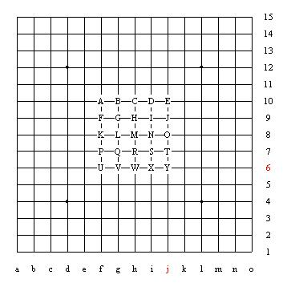
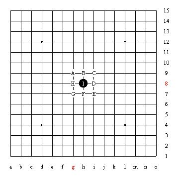
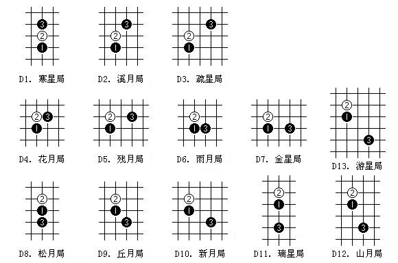

五子文化与知识(十):基本下法及开局
#1 五子文化与知识(十):基本下法及开局 作者：茗弈宽容 发表时间：2010-3-25 10:11:20
中国棋院在线讯 《五子棋知识》第十至十三章详细介绍了五子棋基本下法、指定开局、三手可交换及五手两打等知识，详见如下内容。
十、基本下法
对局双方各执一色棋子在行棋时必须用手将棋子放在棋盘的空白交叉点上，黑方先，白方后，交替落子，每次只能下一子。在“一着”的定义中规定“不论落子的手是否已脱离棋子，均被称为一着”。它的含义就是落子生根，不许移子，不许拔子，不许在棋盘上推动棋子滑行(推盘)。我们在平时下棋就要注意培养行棋的好习惯，不拔子，不推盘。
规则中规定棋手有Pass权，就是有放弃行棋的权利。但是，待对方再行棋后，你是有恢复行棋权利的，否则，棋手一pass，就可能意味着输棋了。一方未pass,另一方连下二步，要被判违例的，判了违例，还要把第二子收回。
执行黑方指定开局，三手可交换，五手两打的规定。黑方有禁手，白方无禁手。黑方禁手有三三禁手、四四禁手和长连禁手三种。黑方连五取胜；白方连五或者指出黑方走禁手取胜。
十一、指定开局
指定开局是五子棋规则中设立的特殊规定之一。
对局开始后的前三着所形成的布局称开局。前三着落的两黑一白子，本应黑白双方完成，但职业五子棋比赛规定，这开局的前三着棋均由黑方来完成，又称黑方指定开局。指定开局的落子范围、分类、不同棋形的名称均做了确切的规定。因此，我们也可以这样说，先走方有选择开局的权利。
从棋盘范围来讲，开局三着的落子要落在以天元为中心的5横5纵线交叉而成的25个点内(如图12)

图12：指定开局范围
第一手黑子必须放天元
第二手白子必须落在与天元直接相连，周围的8个点上。(如图13)

图13：白2位置
第二手白子落在与天元阴线相连的斜侧方向点上的开局称斜指开局。斜侧方向共有4个点可放白子，这4个点两两对称，实质上放任何一个点上的白子与其他三点上放白子行棋作用均相同。为了研究简洁、不重复，在论述开局内容时，我们通常只以天元右上侧方放白子为例研究开局，不再重复研究3次。
第二手白子落在与天元阳线相连的正侧方向点上的开局称直指开局。同上论述，我们通常只以天元上方放白子为例来研究开局，不再重复3次。
第三手黑子落在开局范围内后，便形成了完整的开局棋形，去掉由于对称而作用相同的一些重复部分，直指开局，斜指开局各13种。这26种开局均以“星”和“月”命名。
开局中的两枚黑子的基本棋形大致分为桂(日字马步形)、间(在一条阳线或阴线上间隔一个点)、连(在一条阳线或阴线上无间隔)三种类型。在各种开局名称中，“间打”的名称用“星”表示，“桂打”和“连打”的名称用“月”表示。(如图14)
直指开局(D)：英文为Direct(直接的)，白2选择阳线上与黑1相邻的防守点。

图14
以上这26种开局就是规则中规定的，在国际国内正式五子棋比赛指定的可使用的开局，并且是必须使用的开局，如果黑方在开局时未按指定开局去行棋，均可被判罚违例的。
我们在这里只是简单介
#2 Re:五子文化与知识(十):基本下法及开局 作者：心上人 发表时间：2010-3-25 14:29:34
很喜欢这样的玩法，三手可交换，五手两打